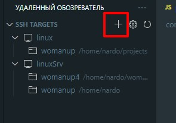
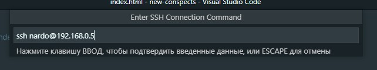
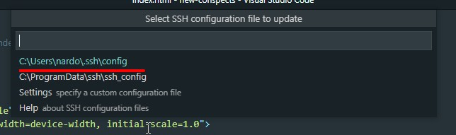
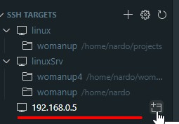

Разворачивание среды разработки
- Linux - Разворачиваем linux server на виртуально ймашине (Hyper-V). Git скорее всего будет стоять по дефолту, поэтому ставим только npm
- SSH - генерируем ssh ключи на linux, что бы появилась папка home/nardo/.ssh после этого заменяем ключи на те, что добавлены на проде и зарегистрированы на GitLab
- Repository - создаем папку womanup и клонируем в нее репозиторий с GitLAb
- Meteor - устанавливаем на linux meteor - curl https://install.meteor.com/ | sh
- Remote SSH - теперь все что нам остается - это через плагин Remote-SHHустановить подключение:
- 
- 
- 
- 
- Вводим npm i после чего в скриптах packege.json выбираем dev. Ждем когда установятся зависимости. Первая установка очень долгая.